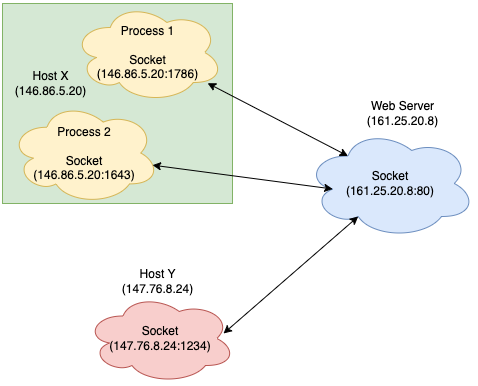
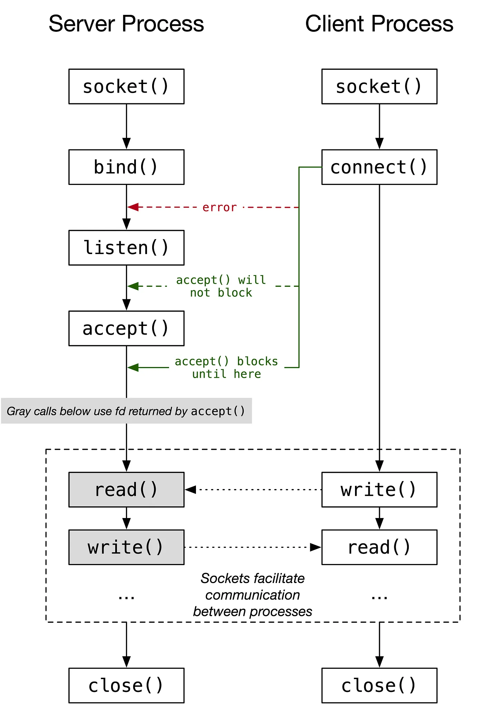

Chapter 8: Sockets and Communication
Overview
This chapter introduces sockets, a powerful inter-process communication (IPC) mechanism that enables data exchange between processes over a network or locally on the same system. Sockets are the foundation of modern network programming and are used to implement protocols like TCP and UDP.
Key topics covered in this chapter include:
- What sockets are and how they work
- TCP vs. UDP sockets
- Creating client-server programs in C
- Using
socket(),bind(),listen(),accept(),connect() - Socket address structures
- Example code and debugging tools
What Are Sockets?
A socket is an abstraction representing an endpoint for communication. A pair of sockets forms a communication channel. Sockets can be used for:
- Inter-machine communication (across networks)
- Local IPC (via Unix domain sockets)

Socket Types
| Type | Protocol | Characteristics |
|---|---|---|
SOCK_STREAM |
TCP | Reliable, connection-oriented |
SOCK_DGRAM |
UDP | Unreliable, connectionless |
SOCK_SEQPACKET |
Sequenced packets (rarely used) | Connection-oriented with message boundaries |
TCP vs. UDP
| Feature | TCP | UDP |
|---|---|---|
| Reliability | ✔ Yes | ✘ No |
| Connection | ✔ Required (connect) |
✘ Not required |
| Ordered Delivery | ✔ Yes | ✘ No guarantee |
| Speed | Slower | Faster |
| Use Case | Web, Email, File Transfer | DNS, Streaming, Gaming |
Creating a TCP Server in C
#include <stdio.h>
#include <string.h>
#include <sys/socket.h>
#include <netinet/in.h>
#include <unistd.h>
int main() {
int server_fd, client_fd;
struct sockaddr_in addr;
char buffer[1024] = {0};
server_fd = socket(AF_INET, SOCK_STREAM, 0);
addr.sin_family = AF_INET;
addr.sin_addr.s_addr = INADDR_ANY;
addr.sin_port = htons(8080);
bind(server_fd, (struct sockaddr *)&addr, sizeof(addr));
listen(server_fd, 5);
client_fd = accept(server_fd, NULL, NULL);
read(client_fd, buffer, 1024);
printf("Received: %s\n", buffer);
write(client_fd, "Hello from server", 18);
close(client_fd);
close(server_fd);
return 0;
}
Creating a TCP Client in C
#include <stdio.h>
#include <string.h>
#include <sys/socket.h>
#include <netinet/in.h>
#include <arpa/inet.h>
#include <unistd.h>
int main() {
int sock = socket(AF_INET, SOCK_STREAM, 0);
struct sockaddr_in addr;
addr.sin_family = AF_INET;
addr.sin_port = htons(8080);
inet_pton(AF_INET, "127.0.0.1", &addr.sin_addr);
connect(sock, (struct sockaddr *)&addr, sizeof(addr));
send(sock, "Hello server", 12, 0);
char buffer[1024] = {0};
read(sock, buffer, 1024);
printf("Server replied: %s\n", buffer);
close(sock);
return 0;
}
Socket System Calls
socket(): Creates a new socket.bind(): Binds socket to a local address.listen(): Prepares socket to accept incoming connections.accept(): Accepts a connection from a client.connect(): Connects to a server.read()/write()/recv()/send(): Communication functions.close(): Closes the socket.

🌐 Interactive MicroSim
Visualize how sockets handle client-server communication — see TCP handshakes, message sending, and connection closing with animated channels and pulses:
👉 Launch the Socket Communication Simulator
Address Structures
Sockets use struct sockaddr_in for IPv4:
struct sockaddr_in {
short sin_family; // Address family (AF_INET)
unsigned short sin_port; // Port number
struct in_addr sin_addr; // IP address
};
Use inet_pton() to convert a string IP address into binary:
inet_pton(AF_INET, "127.0.0.1", &addr.sin_addr);
Debugging and Tools
netstat -an: View open ports and socket stateslsof -i: List processes using network socketsnc(netcat): Simple client/server testingtcpdumporwireshark: Packet sniffing tools
Interactive Quiz
Test your understanding of sockets:
-
What does
socket(AF_INET, SOCK_STREAM, 0)create?A. A UDP socket
B. A TCP socket
C. A raw socketShow Answer
The correct answer is B.
SOCK_STREAMwithAF_INETcreates a TCP socket. -
Which function is used by a server to wait for a connection?
A.
connect()
B.accept()
C.recv()Show Answer
The correct answer is B. The server uses
accept()to wait for a client connection. -
What is the main difference between TCP and UDP?
A. UDP is more reliable
B. TCP is connectionless
C. TCP guarantees delivery, UDP does notShow Answer
The correct answer is C. TCP ensures reliable delivery; UDP does not.
Summary
- Sockets provide flexible and powerful IPC for local and network communication.
- TCP is reliable and connection-based; UDP is faster but connectionless.
- System calls like
socket(),bind(),accept(), andconnect()manage socket communication. - Understanding the socket lifecycle is essential for building robust network programs.
In the next chapter, we’ll explore TCP & UDP in greater depth, comparing their APIs, performance, and real-world use cases.
This chapter is based on material from "Advanced Programming in the UNIX Environment, Third Edition, by W. Richard Stevens and Stephen A. Rago, 2013."